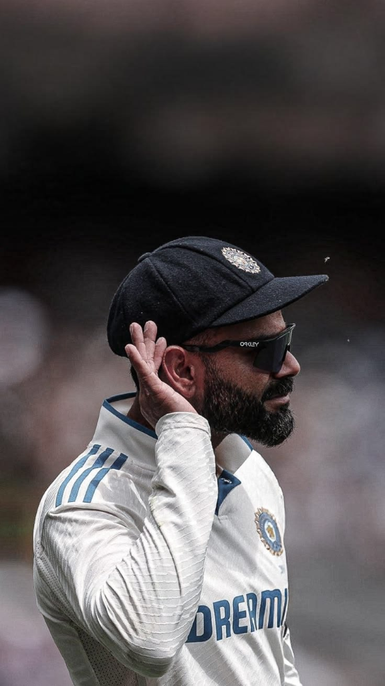
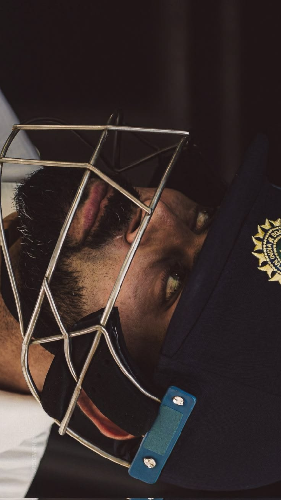
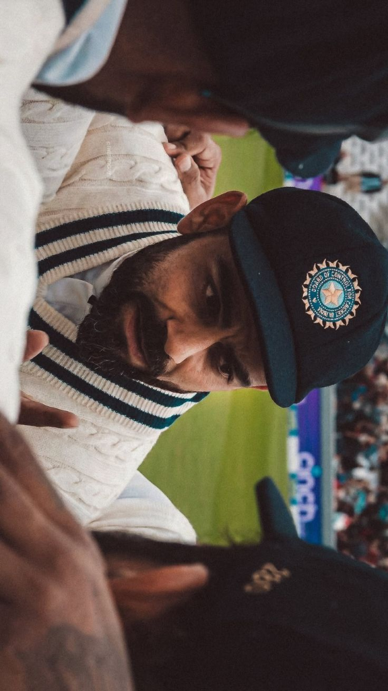

TEST CRICKET
Virat Kohli's contribution to Test cricket goes far beyond runs and records. He brought a new level of intensity, passion, and competitiveness to the format, inspiring a generation of cricketers to value Test cricket. As a leader, he encouraged an aggressive and fearless approach, helping India become a strong force both at home and overseas. His commitment to fitness, discipline, and excellence set new standards for the team. Through his dedication and love for the longest format of the game, Virat Kohli played a major role in keeping Test cricket exciting and respected in the modern era.
TEST MEMORIES

THE CROWD SILENCER
An iconic gesture of composure and defiance, responding to vocal overseas crowds with pure batting masterclasses.

03
04 05
05